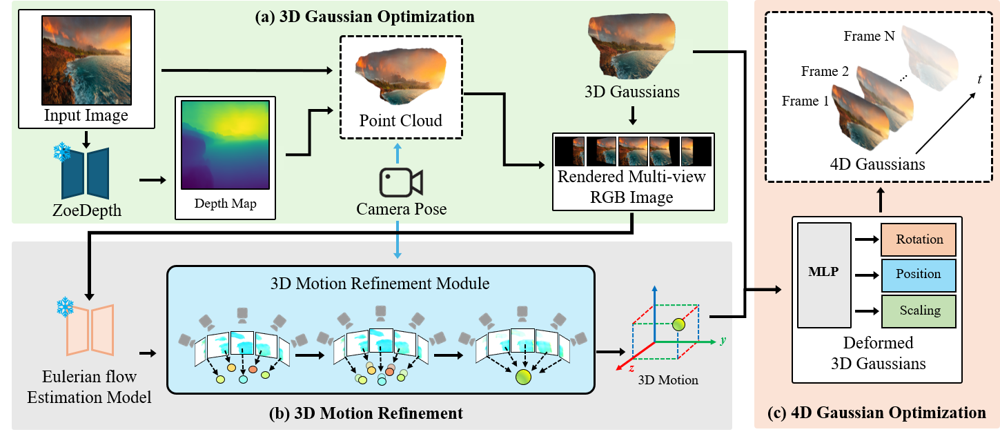

Dynamic Scene Reconstruction from Single Landscape Image Using 4D Gaussian in the Wild
In-Hwan Jin*, Haesoo Choo*, Seong-Hun Jeong, Park Heemoon, Junghwan Kim, Oh-joon Kwon, Kyeongbo Kong
*: Equal Contribution
Pukyong National University, Pusan National University, DMStudio


Overview video
Dynamic Scene Video
Recently, a field known as dynamic scene video has emerged, which creates videos with natural animations from specific camera perspectives using a combination of single image animation and 3D photography. These methods utilize Layered Depth Images (LDIs), which are created by dividing a single image into multiple layers based on depth, to represent a pseudo 3D space. However, there are limitations when attempting to discretely separate most elements, including fluids, in a continuous landscape, and 3D space cannot be fully represented this way. Therefore, achieving complete 4D space virtualization through explicit representation is necessary, and we propose this approach for the first time.
Abstract
Based on the outstanding performance of 3D Gaussian splatting, recent multi-view 3D modeling studies have expanded to 4D Gaussians. By jointly learning the temporal axis with 3D Gaussians, it is possible to reconstruct more realistic and immersive 4D scenes from multi-view landscape images. However, obtaining multi-view images that accurately reflect the overall motion in the wild is extremely challenging. In the dynamic scene video field, pseudo-3D representation methods combine with single-image animation techniques, which allows elements to move and render new scenes from different camera perspectives. Layered Depth Images (LDIs), a simplified 3D representation of separating a single image into depth-based layers, have limitations in reconstructing complex scenes, and artifacts can occur when continuous elements like fluids are separated into layers. Furthermore, due to its implicit modeling of 3D space, the output may be limited to videos in the 2D domain, potentially reducing their versatility. This paper proposes representing a complete 3D space for dynamic scene videos by modeling explicit representations, specifically 4D Gaussians, from a single image. The framework is focused on optimizing 3D Gaussians by generating multi-view images from a single image and creating 3D motion to optimize 4D Gaussians. A key aspect is consistent 3D motion estimation, which aligns common motion across multi-view images to bring 3D space motion closer to actual motions. Our model shows the ability to deliver realistic immersion in the wild landscape images through various experiments and metrics.
3D-MRM Framework
The overview of our pipeline.: Our goal is to refine 4D Gaussians to represent a complete 3D space, including animation, from a single image. (a) A depth map is estimated from the given single image, and it is converted into a point cloud. For optimizing the 3D Gaussians, multi-view RGB images are rendered according to the defined camera trajectory. (b) Similarly, multi-view motion masks are rendered for the input motion mask. These are utilized to estimate multi-view 2D motion maps along with the rendered RGB images. 3D motion is obtained by unprojecting the estimated 2D motion into the 3D domain. In this context, the proposed 3D Motion Refinement Module (3D-MRM) ensures consistent 3D motion across multi-views. (c) Using the refined 3D Gaussians and generated 3D motion, 4D Gaussians are refined for changes in position, rotation, and scaling over time.

3D Motion Refinement Module. To maintain consistency of motion across multi-views, 3D motion is defined from the point cloud and projected into 2D images using camera parameters. The L1 loss between the projected motion and the estimated motion map as the ground truth is computed, minimizing the sum of losses for multi-view to refine the 3D motion.
Quantitative Results
Results comparing our framework to the previous dynamic scene video model: Our approach outperforms the other baseline on all metrics in the context of view generation.
In particular, our method achieved the highest scores in PSNR, SSIM, and LPIPS, indicating that the generated views are of high fidelity and perceptually similar to the ground truth views.
Additionally, we applied motion masks to the animated regions to compare the results.
This shows that the quality of animation for designated areas in the 4D Gaussians rendered videos was realistic and of high fidelity.